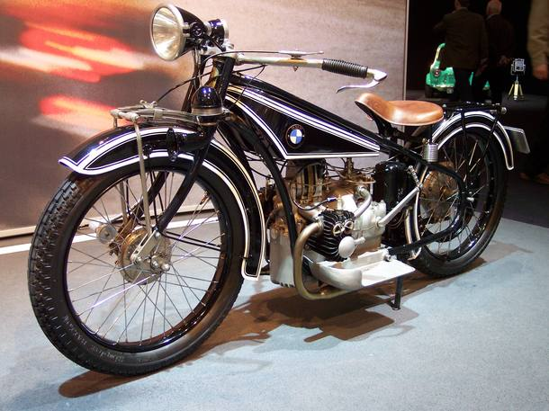
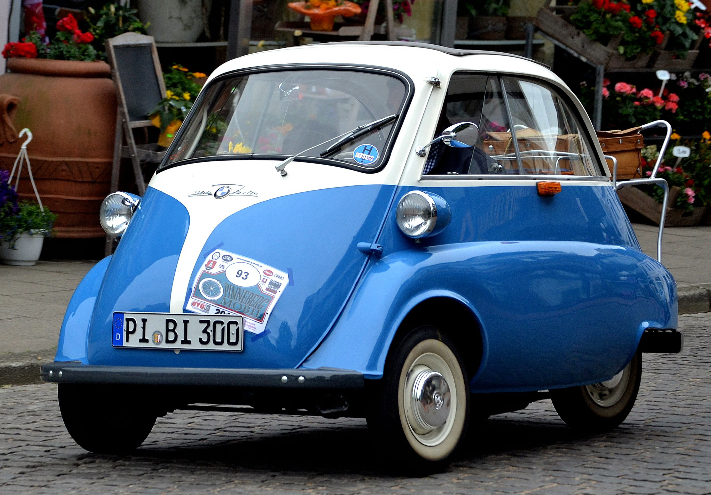

Historia da luxuosa marca BMW
A BMW, que significa Bayerische Motoren Werke, foi fundada no dia 7 de março de 1916, na Alemanha. A companhia, hoje conhecida pelos automóveis e motocicletas de luxo, tem sua origem marcada pela fusão de duas fabricantes de motores de avião: a Rapp Motorenwerke e a Gustav Otto Flugmaschinfabrik.
Com a derrota alemã na I Guerra Mundial, o Tratado de Versalhes proibiu a fabricação de aviões em território alemão, o que fez com que a BMW passasse a trabalhar em outros setores.
Em 1923, a companhia lançou sua primeira motocicleta e, em 1928, a empresa começou a atuar na produção de carros. Apesar disso, durante o regime nazista a marca retomou a fabricação de motores de aviões e, ao final da II Guerra Mundial, a marca entrou no mercado de eletrodomésticos para sobreviver. No ano de 1948, a BMW retomou a produção de motocicletas e, quatro anos depois, voltou a produzir carros.
O inicio
Em 1923, a companhia lançou sua primeira motocicleta e, em 1928, a empresa começou a atuar na produção de carros. Apesar disso, durante o regime nazista a marca retomou a fabricação de motores de aviões e, ao final da II Guerra Mundial, a marca entrou no mercado de eletrodomésticos para sobreviver. No ano de 1948, a BMW retomou a produção de motocicletas e, quatro anos depois, voltou a produzir carros.
Depois de tantos percalços, a BMW se firmou como uma das principais fabricantes de motos e carros de luxo do mundo. No Brasil, a companhia desembarcou em 1995, como uma importadora de veículos. Porém, foi somente em 2014 que a companhia marcou presença oficialmente em território brasileiro, quando inaugurou sua fábrica em Araquari, em Santa Catarina.
Além da fabricação e venda de veículos, o grupo também atua no segmento de serviços financeiros. Contando com 31 locais de produção, em 15 países do mundo, a empresa é responsável por empregar mais de 118 mil funcionários, segundo dados de 2021.
Destacando-se como uma das maiores empresas do mundo, a BMW ocupa a 64ª posição na edição de 2022 do ranking The Global 2000. A lista, organizada pela Forbes, avalia as empresas de acordo com quatro métricas: ativos, valor de mercado, vendas e lucro.
Primeiros veiculos
BMW R32 (1923)
No mundo das motos, que veio antes do que os carros para a BMW, o modelo R 32 é um dos mais cultuados da marca. Produzido entre 1923 e 1926 foi o primeiro modelo da marca e também sacramentou o padrão boxer (cilindros opostos) para as motos da marca com o motor de 494 cm³ e 8,5 cv.

BMW 303 (1933)
Em 1933, o 303 era apresentado como o primeiro BMW que traria dois itens que se tornariam um ícone da marca: A grade 'duplo rim' do motor e o motor seis cilindros em linha, no caso, um 1.2 que gerava 30 cv

BMW 3/15(1929)
Dos 100 anos que completa como marca, a BMW começou a produzir carros apenas em 1929, quando criou o 3/15, um carro que surgiu de um Joint Venture com a britânica Austin Seven.

BMW R24(1948)
O BMW 501 foi o primeiro carro do pós 2ª Guerra que a marca construiu entre 1952 e 1962. Ele teve motores seis cilindros e V8 entre 2.0 e 2.6. O câmbio era manual de quatro marchas. Ele foi substituído pelo 502 em 1954, mas a base continuava a mesma.

BMW-Isetta(1955)
O BMW Isetta é um clássico que os brasileiros conhecem bem. Por aqui ele foi licenciado e produzido como Romi-Isetta. Com abertura frontal, ele tinha um motor monocilíndrico de 247 cm³ de 13 cv derivado de motocicleta que era tido como mais confiável que o original italiano da Iso
